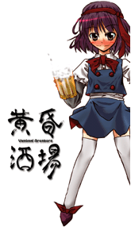

- Welcome to Touhou Wiki!
- Please register to edit. For assistance, check in with our Discord server or IRC channel.
Isami Asama
Isami Asama a̠sa̠ma̠ isa̠mi | |
|---|---|
|
 Isami Asama in the alcostg_setup.exe file for Uwabami Breakers Twilight's Monster OLMore Character Titles | |
| Species |
Human (native to the Outside World) |
| Age |
Certainly over 20 |
| Occupation |
Office Lady, Drinking beer 24/7 |
| Location |
Outside World, visits the Twilight Bar Room |
Appearances | |
| Official Games | |
| |
- Note: This article is part of the game Uwabami Breakers by the Doujin circle The Drinking Party.
Isami Asama (浅間 伊佐美 Asama Isami) is an Office lady who is very fond of beer. She loves to drink beer everywhere she goes (she even drinks in the morning). Isami goes to the Twilight Bar Room on a daily basis simply because it's cheap (she would have to change jobs if she kept her high tabs), and because heavy drinking is allowed. She is the protagonist and the only playable character of Uwabami Breakers, being her only ever official appearance.
General Information[edit]
Originally, Isami's curry and alcohol tabs were getting quite high to pay, so she was afraid that she would have to eventually change jobs. One day however, she took an interest in a story her boss was telling about; a bar where all the serious drunks gather, called the Twilight Bar Room. It was said that if you drink there until morning, you'd see "A mysterious world of curtain fire..." So during the night, she encounters Tatsumi Hakkaisan the chief, Rumi Arie the landlady, then Amakasu Barley Tenji the steward/dancer who each game her a danmaku battle through drunkenness. These can drink anyone under the table and make them fall, where they'll still come back due to their new menus, but not Isami. At the end of the game, she's shown to have "complete domination" (完全制覇 kanzen seiha), and begs Amakasu for more money so she can drink more. This proves that she can drink under the table, defying the "Uwabami Breakers".
During Isami's gameplay, she holds a glass of beer and flies around the bar, shooting what appears to be chopsticks or something similar at various flying food and drinks. She has a Beer Gauge, which fills as she shoots down the enemies. The gauge fills at 3 litres, and the shot power increases with every litre of beer. Bombing results in a forward-facing attack that depletes the beer gauge by 1 litre; this happens to be Isami vomiting beer. The capacity of the beer gauge is also decreased by 0·1 litres until the end of a stage.
The standard controls for her in the game are: ⇧ Shift for focus fire, Z for a charge shot, X to bomb and C for rapid fire, just like in Fairy Wars when playing as Cirno. Holding down Z results in a charge shot, which releases a barrage of chopsticks that stay in place when fired for a few seconds, then start homing towards any nearby enemies. Typically, the barrage of chopsticks is more powerful than rapid fire.
Background Information[edit]
Name[edit]
Her full name is Isami Asama (浅間 伊佐美). Asama (浅間) is possibly derived from asamashii (浅ましい or 浅間しい), meaning "wretched", "despicable", or "shameful" (perhaps referencing her drunkenness). The kanji in Isami (伊佐美) happens to mean "Italy", "subordinate" and "beauty" respectively. The latter two seems to make more sense based on her character, but this is an actual name in Japanese, so there maybe no actual meaning.
Design[edit]
Isami's design shows that she has short ruby/violet hair with dark red headband. She wears a white and navy blue t-shirt with gray sleeves and a red bowtie and red buttons on her shirt. She also wears white knee-high socks under a navy blue skirt and a pair of dark red shoes with pointy-edged bows. She also has a red tie on her head, which could suggest that she's some sort of troublemaker. After all, she does appear to cause some mischief during Uwabami Breakers.
Relationships[edit]
- Amakasu Barley Tenji
Amakasu Barley Tenji may be a possible rival to Isami. In the ending, Isami was bleeding for more money off Amakasu so she can buy more drinks.
- Rumi Arie and Tatsumi Hakkaisan
The relationship with Rumi Arie and Tatsumi Hakkaisan is unclear.
Gallery[edit]
Isami on the official CD cover of UB
Isami begging for more money off Amakasu in the ending
Isami after completing the game
Additional Information[edit]
- Isami appears on the official cover of Uwabami Breakers.
- It's possible that other characters from Uwabami Breakers may know that Gensokyo exists, but it's unlikely Isami also knows about it, as she initially goes to the Twilight Bar Room because of a story her boss told her where if you drink there until morning, you'd see "a mysterious world of curtain fire". She also doesn't use the Spell Card system.
Official Profiles[edit]
| ○主人公 黄昏の怪物ＯＬ
「浅間 伊佐美」（あさま いさみ） 呑む為に起き、呑む為に会社に行き、呑む為に寝る新人ＯＬ。 そんなある日、上司からウワバミが集まる酒場の話を持ちかけられ、興味を持った。 |
Main character Twilight's monster OL
Isami Asama An OL that wakes up to drink, goes out into the world to drink, and goes to bed to drink. So, one day, she took interest in a story her boss was telling about a bar where all the serious drunks gathered. |
Official Sources[edit]
- 2007/12/29 Uwabami Breakers - Official profile, playable, ending
| This page is part of Project Characters, a Touhou Wiki project that aims to write proper descriptions for all official characters of Touhou Project. Please keep the character page guidelines in mind when contributing. |